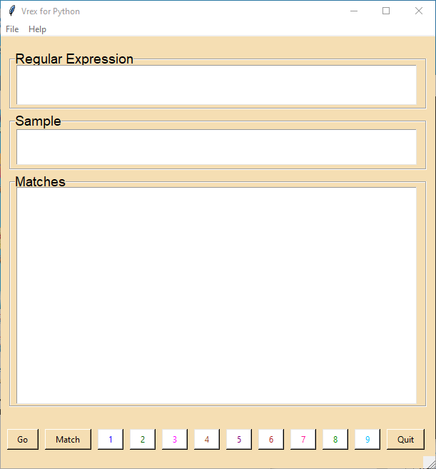
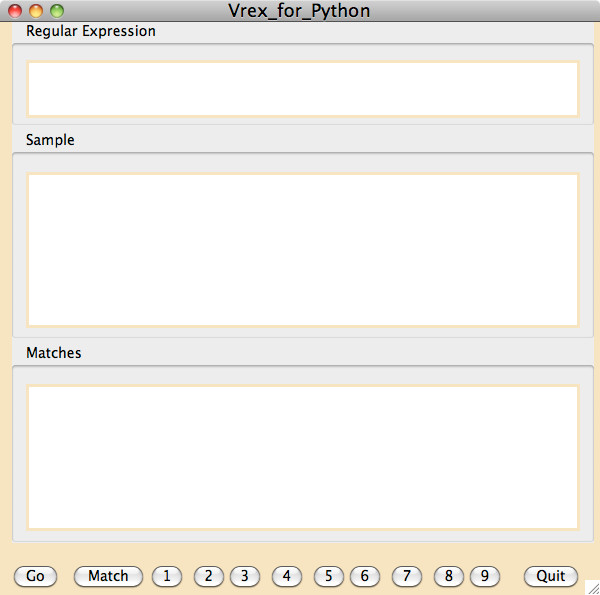

Styles and Themes¶
My understanding is that the motivation and attraction of ttk is that one may compose a GUI and it will look “normal” when run in any of the common OS’s - Linux, UNIX, Windows, or OS X. Also, it is possible to create new themes which are more pleasing because of a more modern appearance of a GUI. However, I think ttk is a mess in terms of architecture, implementation, and especially documentation. However, there are several much needed widgets available in ttk including ttk::notebook, ttk::progressbar, ttk::treeview, ttk::panedwindow, ttk::separator, and ttk::sizegrip. PAGE supports those ttk widgets as well as a few others. To get a better appreciation of some of the difficulties in working with styles and themes, see the difficulties page for info.
The Tk problem that PAGE addresses is that there are two sets of widgets, tk widgets and ttk widgets, but neither set is complete and so a GUI will probably combine widgets from each set. For example, the set of tk widgets lack widgets such as tabbed notebooks, combo boxes, and separators while ttk widgets lack a message widget, text widgets, and canvas widgets. In earlier versions of PAGE projects ttk widgets mimicked tk widgets. Version 8.0, introduces support of ttk themes and that requires that the appearance of tk widgets mimic ttk widgets. Also, I try to have the generated GUI sport the PAGE preferences. And finally, I wish to respect PAGE preferences which allow one set of preferences for PAGE windows and different preferences for the GUI under development.
In other words,I have tried to manipulate the Themes and Styles in a way that the PAGE user can mix ttk widgets with tk widgets and have a reasonably consistent appearance. This is very much a case of evolving understanding and appreciation. This usage of Themes and Styles is different from orthodox usage which would replace tk widgets with ttk widgets but it seems to work pretty well as shown by Widgetdemo. There are still issues related to menus which will be addressed in a future release.
I received a great deal of help from Guilherme Polo which got me to the point I am at now. Also, Maksim Korzh was instrumental in providing the Style coding for the PNotebook widget.
First I would like to automatically generate code for the user which would follow his color scheme as expressed in the preferences window. Consider the following code for a GUI window that contains a tabbed notebook with a background color of wheat:
_style_code_ran = 0
def _style_code():
global _style_code_ran
if _style_code_ran: return
try: note_support.root.tk.call('source',
os.path.join(_location, 'themes', 'page-wheat.tcl'))
except: pass
style = ttk.Style()
style.theme_use('page-wheat')
style.configure('.', font = "-family {DejaVu Sans} -size 14")
_style_code_ran = 1
The module level function _style_code sets up the theme to be used with the ttk widgets. This code will vary with the theme and the ttk widgets used. It is only executed once. It reads the specified theme, if it is not one of the ttk builtin themes and sets the font to the default text font specified in the preferences.
The following code in the __init__ fixes the background color of the Toplevel window.
top.configure(background=_bgcolor)
top.configure(highlightbackground="wheat")
top.configure(highlightcolor="black")
I did all of my development work on Linux. As an illustration of the same PAGE-generated GUI running under different systems, let me present the following screens shots of vrex.py (vrex is one of the examples discussed later in the examples section):

Above: Running vrex running on Linux. This is what I built using PAGE on Linux..
Above: Running vrex running on Windows 10 using the “winnative” theme. This looks pretty good except for the background color in the menubar and the sizegrep.
Above: Running vrex running on OS X.
Version 8 Additions¶
There are two sets of windows presented in PAGE - PAGE windows like the Attribute Editor and the Widget Tree and GUI windows being constructed. Themes are only active or imposed on the GUI windows while the appearance of PAGE windows follows the Preferences window.
PAGE version 8 introduces the ability to use ttk themes other than the built in “default” theme. Previously, PAGE supported only the “default” theme and it was perverted to make the ttk widgets resemble the tk widgets. I had in mind that one would use tk widgets and still have consistent access to needed widgets that have no counterpart in tk widget set such as notebooks and progress bars. Since Version 8 makes available all of the builtin themes including “default” which should be left untouched, it seemed best to create a new theme, named “page-legacy”. If one selects “page-legacy” as the theme in preferences and sticks with it, PAGE will behave as previously.
In theory, if one wishes to exploit the appearance of another theme, he selects one of the other supported themes and confines himself to ttk widgets.
Themes impose geometric features, color schemes, and fonts. Typically, the font size is 10 point. Since I strain to read 10 point fonts, I have attempted to respect the GUI font preferences. That is, GUI fonts specified in the PAGE Preferences Window will be imposed with ttk widgets.
Default is not default Unless it is¶
Ttk has several builtin themes and the list of those available is dependent on the OS where Tk or tkinter is running. For example, on Linux the builtin themes are clam, alt, default, and classic. With Windows the list is winnative, clam, alt, default, classic, vista, and xpnative. Finally, OSX the builtin themes are aqua, clam, alt, default, and classic. If the program does not specify the theme to be used, on Linux “default” is used, on Windows “vista”, and on OSX “aqua”. The Preferences window allows the user allows the user to specify the initial theme to be used; if unspecified, then “default” is the initial theme.
Third Party Themes¶
I distinguish two groups of themes: builtin themes and third-party themes. The builtin themes are those which are part of tcl/tk and are contained in the tcl code. Third party themes are user written. I was able to find no documentation, guidance, or even suggestions on creating themes. It’s bedlam out there! Third party themes available in PAGE are contained in the themes subdirectory of PAGE installation directory. Any third party themes used by the generated Python code must be in a themes subdirectory of his project directory.
I have modified the “default” theme in order to support legacy projects and named the theme “page-legacy”. These are projects that were built with earlier versions of PAGE and work with PAGE version 7.6. If you open a legacy project PAGE will do what is necessary to have all widgets use the background and foreground colors and fonts specified at creation. And if you modify and save the project it will be saved as a legacy project. Thus, even if you wish to update a legacy project you are drawn into the world of Themes and Styles. And you will need to have a “themes” subdirectory in your project directory containing the “page-legacy” theme for execution of the generated code. The “page-legacy” is not suitable for use anywhere other than PAGE and PAGE generated Python GUI’s.
PAGE supports some third party themes. We have looked at a number of third party themes and found most disappointing. We have created several themes which we will try to support. They are “notsodark”, “page-notsodark”, “page-dark”, “page-light”, “page-wheat”, and “page-legacy”. Also, several other third party themes are included but if problems are encountered with either a theme itself or changes needed by the way we access it, we will not touch it.
Supported third party themes are stored in a new subdirectory, themes, of the PAGE installation directory. the themes direcctory contains;
tcl theme files, eg. notsodark.tcl, which define a theme.
theme support directories, eg. notsodark which contains support files, including a bunch of images. Not all themes require such a directory.
themes.tcl, a file of my creation which causes the themes in this directory to be loaded and active.
Of course, PAGE users can include other themes in the same way as the included themes.
Remember that PAGE uses the themes directory in the install directory for creating the GUI and the Python modules, while execution of the generated modules relies on the themes directory of the project directory.
Legacy Projects and Themes¶
Legacy has multiple meanings in PAGE. One, legacy can refer to projects created prior to version 8.0. Legacy can refer to PAGE functionality available before 8.0 specifically the ability to specify GUI color preferences. Also, there is the “page-legacy” theme which attempts to provide some of the legacy functionality.
The project files in PAGE now include the project theme. When PAGE opens a project but does not contain theme information, it is assigned the “page-legacy” theme. This allows the user to bring legacy projects forward into version 8 and beyond. It also allows the user to use the borrow function from legacy projects.
When borrowing from a legacy project, you might see some weird color combinations. If so try changing to a different theme and back.
It is highly recommended that if you are in the legacy theme that you use only those ttk widgets that have are missing from the tk widget set. Similarly if you are in one of the other themes use only those tk themes that are lacking in the ttk set of themes.
Changing Themes¶
It is easy in PAGE to visualize and switch themes. The easiest way to change themes is by selecting a new theme from the Combobox in the main PAGE window. Just select the new theme and the GUI will change to that theme.
One can also use the Theme Chooser from the Button-3 context menu, from the Main Menu -> Theme Chooser, or by the Control-T shortcut. The Theme Chooser shows the appearance of most ttk widgets in the current theme.
In addition, the Preference window allows you to specify a preferred theme as the theme when PAGE starts.
When a project is saved, the current theme is saved in the .tcl file. If the theme is then opened, not as a lender, its theme becomes the current theme.